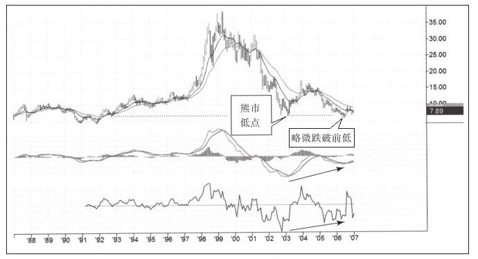
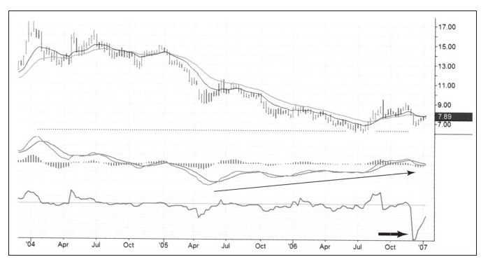
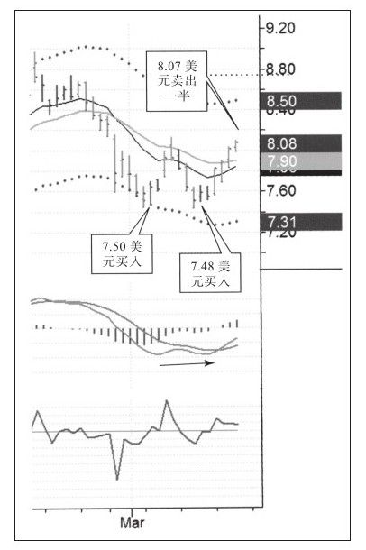
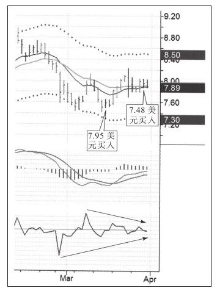

2007年1月杰拉德·德布鲁发邮件跟我说他强烈看多福特汽车公司股票，福特公司刚刚发布了公司历史上最大的季度亏损公告，但他却向我描述了看多该股的原因：新CEO将如何带领公司走出泥潭。我的这位朋友是一名退休基金管理人，通常以基本面为选股方法。我听取了他的意见并在技术上对这只股票做了分析（如图6-5和图6-6所示）。


我的交易信息很少来自于自己的研究，我喜欢基本面研究者给出的建议，因为我主要的工作是做技术分析。所以，如果有基本面信息，就会多一个角度看待股票。
我准备大量买入福特公司股票并持有几年，同时把目标价放在20美元附近，也就是最高价一半的位置。因为这是个长期计划，所以我不太关注价格短期上涨，包括1月底的短期上涨。我当时准备等待并在股价短期下跌的时候继续加仓。
我的计划至今仍在实施中，我也不断地做着下跌时买入、一波上涨后又卖出这样的波段交易。卖出价越来越高，近期由于持有长期核心头寸而得到分红股，这相当于买了便宜股。图6-7介绍了这次交易的前三次买入情况，图6-8介绍了第四次买入情况。
基于基本面看好和强烈的技术信号我建立了长期头寸，基于对市场噪音的观察，在长期交易中做出买卖的波段交易。只要市场发出轻微的卖出信号我就卖出，当市场看起来没问题时，我又在低位接回卖出的股票。整个过程中，我都保持长期交易头寸不变。


[1]还有一个心理上的确认。那年冬天我乘坐出租车时和司机攀谈起来，恰巧他也对股票感兴图趣，但他不知道我是谁。最后一次驾车时，为表慷慨我告诉他我正在买进福特公司股票，他听了非常吃惊地转过身看着我（因为市场上全都是基本面的坏消息），我当时还担心他把车开翻了。我喜欢投资大众抛弃的股票。